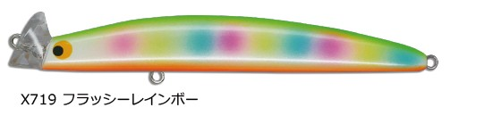
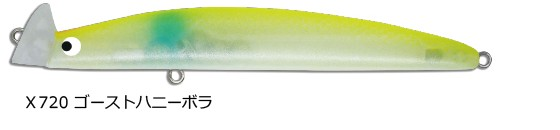
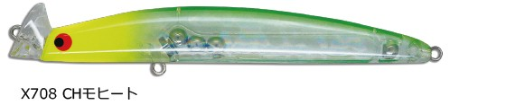
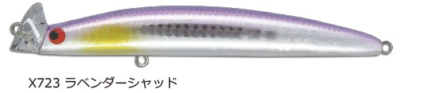

ナンバーセブン117SHO
（ヘッドダウンシンキングモデル）
ナンバーセブン117SHO（NUMBER SEVEN 117SHO）はポジドライブガレージのシンキングモデルです。
フローティングの117Fシリーズに登場した「シンペンとミノーの融合」をテーマにしたヘッドダウンシンキングタイプ。ロッド角度やリトリーブスピード次第で表層から40〜100cmレンジまで幅広くカバーできるのが最大の魅力です。

画像出典:ポジドライブガレージ公式HP
スペック
- メーカー
- ポジドライブガレージ
- タイプ
- シンキングペンシル／ミノー（ヘッドダウンシンキング）
- 全長
- 117mm
- 自重
- 15g
- フック
- #4×2
- リング
- #4
- レンジ
- 40〜100cm
- ターゲット
- シーバス
- 価格
- 2,200円（税込）
- 発売
- 2025年9月（限定発売）
▼今すぐチェック

ナンバーセブン117SHOの特徴
「シンペンとミノーの融合」が生む、表層から深めレンジまでの対応力
-
シンペンとミノーを融合したハイブリッド設計
シンキングペンシルの引き抵抗とミノーのレンジキープ性能を一つにまとめた設計。ロッド角度やリトリーブスピードを変えるだけで、表層からやや深めのレンジまで一本でカバーできる。
-
ヘッドダウン姿勢で高速リトリーブでも破綻しない
着水後はヘッドダウン姿勢を取り、速いリトリーブでも泳ぎが破綻しにくい。テンポよく広範囲をサーチしたいシーバスゲームに向いた設計。
-
リップの抵抗で着水点のズレを軽減
キャスト時はリップが生む抵抗によって飛行姿勢が安定し、着水点のブレを抑えられる。狙ったポイントにタイトにキャストを刻みたい場面で頼れる。
ナンバーセブン117SHOの使い方
基本はただ巻き。ロッドを立てて巻けば表層付近をスローに攻められ、ロッドを下げてリトリーブスピードを上げれば40〜100cmレンジまでしっかり入っていく。この「ロッド角度×スピード」の組み合わせでレンジをコントロールするのが基本の考え方です。
ヘッドダウン姿勢のおかげで高速リトリーブでも破綻しにくいため、広い河川や河口でテンポよくレンジを刻みながらサーチし、反応のあったレンジを集中的にトレースする展開が組み立てやすい。
ナンバーセブン117SHOの得意な状況
河川や河口でレンジを変えながら広くサーチしたい状況が最大の出番。
表層でバイトが出ない時にレンジを一段落として40〜100cm帯を通すなど、1本でレンジ替えができる手返しの良さが光る。秋の落ちハエジャコパターンなど、ベイトが沈み気味のタイミングでも選びたい1本です。
ワンポイント
表層の反応が悪い時は、ロッドを下げてリトリーブスピードを少し上げるだけでレンジが入るので、ロッドワークだけでレンジ替えができる手返しの良さを活かしましょう。
流れが強いポイントでは、ヘッドダウン姿勢を保てる程度のスピードを維持すると、泳ぎが安定しやすくなります。
オススメカラー
ナンバーセブン117SHOは全6色展開。ベイトパターンに合わせやすいオススメカラーを厳選して紹介します。

フラッシーレインボー強いフラッシングで広範囲にアピールしたいサーチベイトとして使いやすい1色。

ゴーストハニーボラボラパターンを意識したナチュラル系カラー。河口・汽水域で使いやすい。

CHモヒート濁り潮やローライト時でも視認性を確保できるチャート系カラー。

ラベンダーシャッド澄み潮やハイプレッシャー下でも違和感を与えにくいシャッド系カラー。
画像出典:ポジドライブガレージ公式HP
ナンバーセブン117SHOに似ているルアー
-
 フリルドスイマー115F
ポジドライブガレージ
詳細はこちら＞
フリルドスイマー115F
ポジドライブガレージ
詳細はこちら＞
同じポジドライブガレージの全長115mmシャローランナー。サイズ感が近く、レンジキープ重視とレンジ可変重視で使い分けられる1本。
-
 フリッド125S
ブルーブルー
詳細はこちら＞
フリッド125S
ブルーブルー
詳細はこちら＞
全長125mmのシンキングペンシル。同じシンペン系の引き抵抗を持つ設計で、サーチベイトとして持ち替えたい1本。